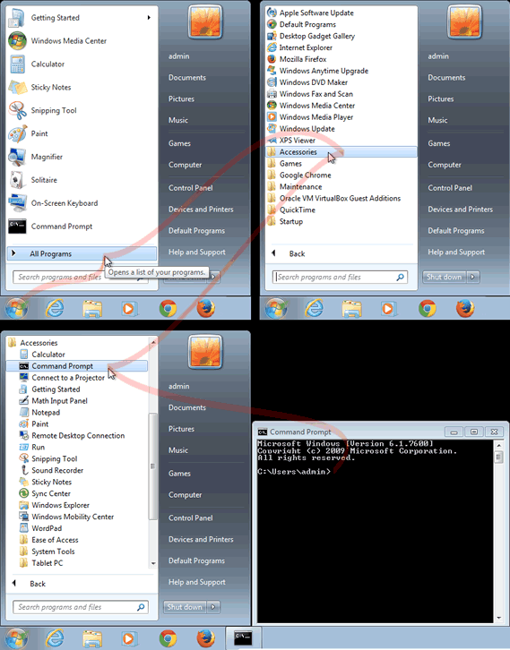
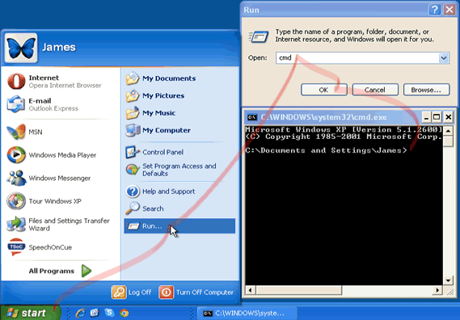
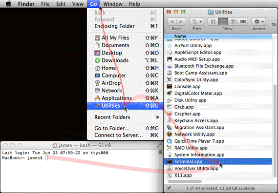

Find the Terminal application on your operating system
Select your operating system below:
Windows 8

Right click at the bottom left corner of the screen. In the contextual menu, select Run. In the dialog window that opens, type cmd then press ENTER or click on the OK button.
Alternative
Go to the All Applications screen. In the Windows System section to the far right, click or tap on the Command Prompt icon.

Windows 7

In the Start menu, click on All Programs, then Accessories and then Command Prompt.
Windows XP

In the Start menu, select Run. In the dialog window that opens, type cmd then press ENTER or click on the OK button.
